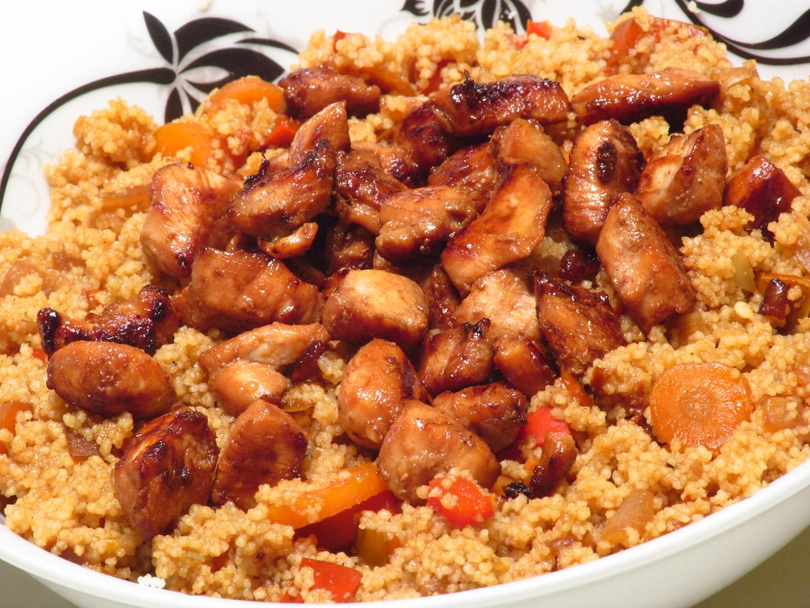

Chicken Divan

Description
Chicken Divan is a home cooked casserole which is easy to prepare and meal prep for the week.
Ingredients
- 2 cans of cream of chicken soup
- 1/4 cup of mayo
- 3 squirts of lemon juice
- 24-oz bag of cooked broccoli
- 1 rotisserie chicken
- 4 cups of cheddar cheese
- 4 cups of dry rice
- 1 roll of Ritz crackers
Steps
- Preheat oven to 350 degrees fahrenheit
- Mix all ingredients except rice into a 9x13 inch pan
- Cover casserole with foil
- Cook casserole for 30-60 minutes or until bubbling
- Cook rice
- After the timer, take of foil and sprinkle crushed Ritz crackers on casserole
- Bake for 10 more minutes
Home